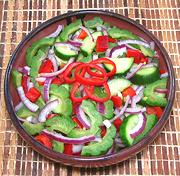

|
Ampalaya & Cucumber SaladPhilippine - Ampalaya & Pipino | ||||
| Makes: Effort: Sched: DoAhead: |
2 # ** 20 min Most |
This is one of my favorite ways to use Bitter Melon. In the past, raw salads were little seen in the Philippines except in hotel restaurants serving Westerners, but they seem to be catching on now. | |||
|
----- 8 10 6 5 ----- 3 4 2 1/3 1/4 ----- |
--- oz oz oz oz --- T T t t t --- |
-- Vegies Bitter Melon (1) Cucumbers (2) Bell Pepper, red Onion, red -- Dressing Vinegar (3) Water Sugar Salt Pepper --------- |
Make - (20 min + 30 minutes if you salt the Bitter Melon)
|